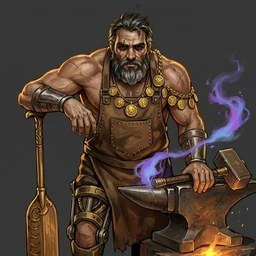
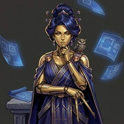
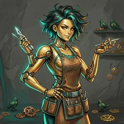
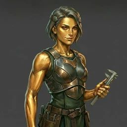
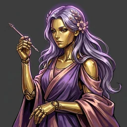
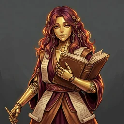
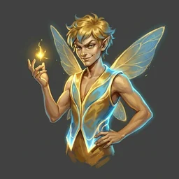
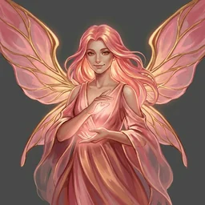
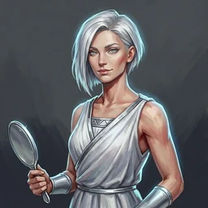
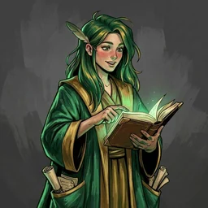

Ten AI agents that build software with you, and show their work as they go
Plan, code, test, review, document: five jobs for one model, and its decisions surface only at the end.
The decisions above are examples of the choices a request like this involves.

Hephaestusruns the forge
Metisplans
Technecodes
Dokimasiatests
Kallosreviews style
Mnemewrites commit messages
Puckguides you in
Cupidcoaches the romance
Aidoscatches vague writing
Aletheiachecks citationsEach is named for a Greek idea that matches its job: Metis is wisdom, Techne is technical skill, Dokimasia is scrutiny, Kallos is beauty, Mneme is memory.
Hephaestus gives each specialist the whole conversation so far, never a summary.
Project term: the Forge Transcript. A bug fix skips planning; a cleanup is style and commit message only.
HephaestusPlan + JWT + tests + commit. Light the forge?
yes
MetisShould CSV export support streaming for large files?
A: yes, constant memory, slower start
B: no, faster start, high memory
A
Every agent streams its reasoning as it works.
Both exchanges are from the project's documentation. Power users can skip the first check with /yolo.
A fast command-line session that streams each agent's work as text.
Each agent's portrait, with a voice matched to its personality.
A story game built in Ren'Py, where your rapport with each agent grows.
One back endHephaestus and the specialists, run with Docker
Claude or Google models, or free local models through Ollama
Each agent's steps and timing in Jaeger, with metrics in Prometheus
Python, with LiteLLM between the agents and the models, and OpenTelemetry for the traces.
AJ Barea · PhD student, Rochester Institute of Technology
ajbarea.github.io · github.com/ajbarea/kourai-khryseai
These slides: ajbarea.github.io/talks/kourai-khryseai